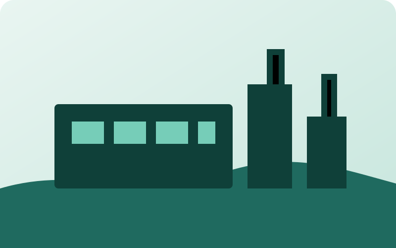

Çevre Danışmanlığı
Çevresel yükümlülüklerin değerlendirilmesi, planlanması ve düzenli takibine yönelik danışmanlık.
Detayları Gör →Çevre mevzuatı, çevre izin ve lisans süreçleri, atık yönetimi ve işletmelerin çevresel yükümlülükleri konusunda işletmenizin ihtiyacına uygun, sistematik ve sürdürülebilir danışmanlık sunuyoruz.
Yeni bir yatırım planlıyor olun veya mevcut bir işletmenin çevre süreçlerini düzenlemek isteyin; önce mevcut durumu değerlendiriyor, ardından uygulanabilir bir yol haritası oluşturuyoruz.

Tek bir başlığa değil, işletmenin bütün çevre sürecine bakıyoruz.
Çevresel yükümlülüklerin değerlendirilmesi, planlanması ve düzenli takibine yönelik danışmanlık.
Detayları Gör →Faaliyetin izin/lisans kapsamının değerlendirilmesi ve ilgili süreçlerde danışmanlık.
Detayları Gör →Atık yönetimi, bildirim ve diğer çevresel yükümlülüklerin düzenli takibine destek.
Detayları Gör →Yeni yatırım, kapasite artışı, mevcut üretim tesisi veya çevre mevzuatı konusunda değerlendirme ihtiyacı olan işletmeler için ilk adım doğru tespittir.
Faaliyet, kapasite ve mevcut çevre süreçlerini değerlendiririz.
İzin, lisans, bildirim ve diğer süreçleri belirleriz.
Öncelikleri belirleyip uygulanabilir bir plan oluştururuz.
Gerekli periyodik işlemlerin takibini sürdürürüz.
Faaliyetiniz, kapasiteniz veya mevcut durumunuz hakkında kısaca bilgi verin. Size hangi başlıklarda destek olabileceğimizi konuşalım.